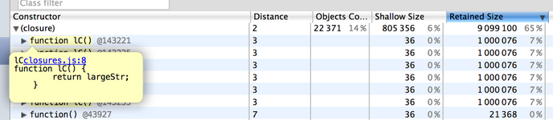

Chen Eshchar - Web developer
Opinya Solutions
My Private Leaking Investigation
„It's a mystery to me, the game commences“

Application Optimizations
Get to know the police force
- Code Performance
- Memory optimization
Memory Optimizations
Get to know your department
- Memory management
- Using more memory than our App needs
- GC may be allocating too frequently
- Memory leaks
- Massive JavaScript objects
- Detached DOM node
How do I know I have a problem?
How bad is it?
I get this when playing around with the application
How do I know I have a problem?
How bad is it?
Application frequently halts for several seconds
How do I know I have a problem?
How bad is it?
Boss instructs you to check for memory leaks
Theory
Short detective course
Objects sizes
Study the mafia heirarchy
- Shallow size
self obtained size - Retained size
Self size + Size of all obtained objects

Objects retaining tree
Bring down the boss and they will all fall
- Trees = Nodes (objects) + Edges (properties)
- DOM trees - reachable from the document root
- Detached DOM trees - released all references to the document

What are GC roots?
Study the mafia connections
- Global object
- Document object
- Other GC roots
Notes
- Released objects - eligable to be GC-ed
- No control from code on the GC process
Chrome Dev Tools
Let's get equipped
- Timeline - visual estimation
- Heap snapshot - snapshots of live objects
- Record heap allocation - objects allocations over time
Detecting a problem in memory management
Read the crime report
- Test App with a clean environment
- Activate the timeline recording
- Repeat a suspected scenario back and forth
- Force GC
- Wait and stop recording
- analyze resulted graph
What is a clean environment?
Read between the lines
We want to isolate any unwanted references to our code that may distract us
- Open browser from the command line with --nocranckshaft and --noopt flags on
- Open browser in incognito mode to disable browser extensions that may add references: Batarang to name one
- Run App in a mode that disables console logs, as they are keeping references to the code they inspect
- Run App in production mode to simulate real environment
Timeline graph patterns
Analyze crime scene photos
Memory get fully GC-ed

Potential memory leak

Some notes on timeline recording
- GC has it's own strategies. You may want to leave the recording on idle state for few minutes to ensure GC
- Run App in production mode to simulate real environment
Detecting memory leaks causes
Pinpointing and arrest plan
- Test App with a clean environment
- Choose a suspected scenraio
- Take a heap snapshot
- Make the steps of the scenario
- Take another snapshot
- Make the scenario reverse actions
- Take a last snapshot
- Switch to comparison mode and compare first and last snapshots
- Filter results to show detached DOM trees
- Analyze results
Analyzing results
Interrogate suspects
- Retaining tree is a reverse pyramid of references
- Entries with red background - Detached elements
- Entries with yellow background - objects with a reference to GC root
- Distance column - distance to root

Fixing and validating
Bring'em to trial
- Recognize your place in code using clues from the retaining tree. Issue should be somewhere between the red and the yellow entries
- Review suspected code
- Release DOM tree in code
- Repeat detection steps to see if problem solved
Some notes on profiling
Debriefing
- Each snapshot starts with a garbage collecting. No need to force it
- Name closure functions. They will help you get around the retaining tree

Record heap allocation
Take another gun, just in case
Memory snapshots over time
Memory leaks in SPA
Transfering to the big city
- Complexity of code and coponents
- Multi developers environment
- Application may run days before refreshing the page
- Detached application sections (ng-if)
AngularJS - areas of interest
Neighborhoods to watch
- DOM manipulations in controllers (that's a no-no)
- Angular "normal" detached DOM trees (ng-if, ng-include, ng-switch, etc.)
- Memory leaks in directives - our main interest
Memory leaks in Angular.JS directives
A bit of action!
What we should do when scope has to die
Directives - release DOM trees
First arrest
- Release any reference to detached DOM trees
- Use scope $destroy event, prior to scope destruction
return function alCaponeLink(scope, element, attrs) {
(function perform100Robberies() {
var div,
i;
for(i = 0; i < 1000; i+=1) {
div = $window.document.createElement('div');
$window.alCaponeTreasure.push(div);
}
})();
scope.$on('$destroy', function findCaponeTreasure() {
$window.alCaponeTreasure = null; // <- This fixes the leak
});
};
Directives - destroy third party plugins
Second arrest
- Use plugin API to remove/destroy plugin
- Fixed jQueryUI bug - datepicker_instActive
function timeBombDirective () {
return function timeBombLnk(scope, element, attrs) {
(function setTimeBomb() {
element.datepicker();
})();
scope.$on('$destroy', function neutralizeTimeBomb() {
element.datepicker('destroy'); // <- This fixes the leak
});
};
}
Directives - stop any running interval
Third arrest
- Release
setIntervalon $destroy event - Manual destruction of the interval still needed with $interval
function tedBundyDirective ($interval) {
var Body = function () {
// define person
};
return function tedBundyLink(scope, element, attrs) {
var bodies = [],
killingInterval = $interval(function kill() {
bodies.push(new Body());
}, 50);
scope.$on('$destroy', function arrestTedBundy() {
$interval.cancel(killingInterval); // <- This fixes the leak
})
};
}
Surprising profiling results
Other suspects
- ng-if, ng-switch, ng-include directives
- Appear in many profiling report entries
- Not a memory leak but should be optimized
Thank you!
- Presentation slides online: https://cdn.rawgit.com/eshcharc/memory-leaking-presentation/master/index.html#/
- Memory leaks playground (crime scene): https://github.com/eshcharc/private-leaking-investigation
- Questions: chen@opinya.co.il